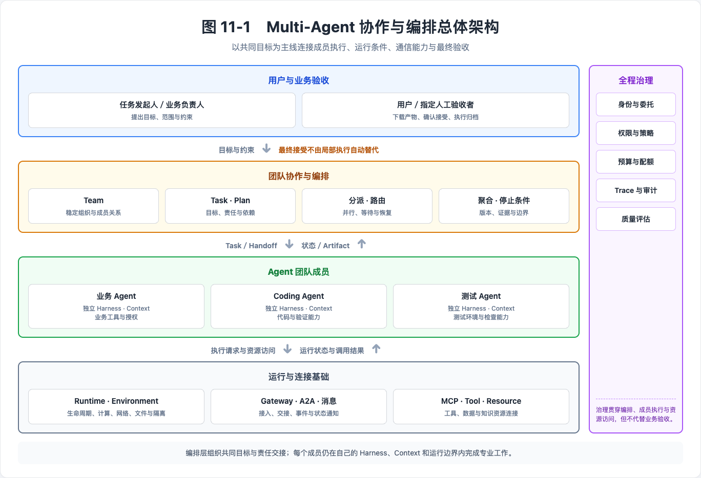
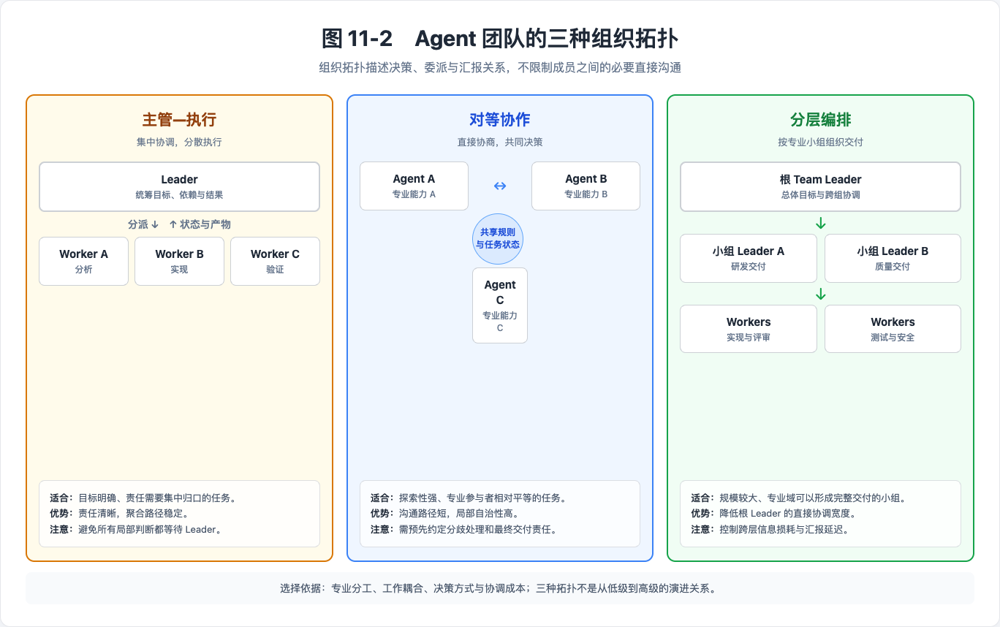
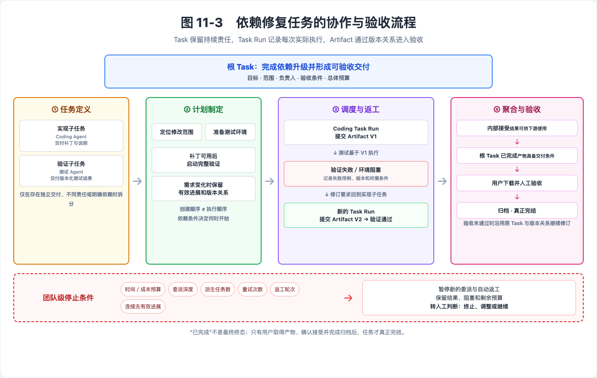

第 11章 Multi-Agent 协作与编排¶
当 Agent 从单点能力验证走向真实业务，系统面对的问题也在发生变化。很多任务已经不是一次模型调用，或者一个 Agent 完成一轮规划和工具执行就能结束。它们往往持续更长时间，涉及不同专业领域，需要访问不同的系统和数据，还可能穿插人工确认、结果评审和异常处理。此时，真正困难的已经不只是如何让一个 Agent 变得更强，而是如何让多个 Agent 与人围绕同一个目标有序协作。
把多个 Agent 放在一起并不会自然形成团队。如果缺少清晰的分工、协作方式和状态管理，参与者越多，反而越容易出现重复执行、信息不一致、任务遗漏和责任不清。多智能体编排要解决的，正是如何把原本相互独立的执行能力组织起来，让它们既能发挥各自的专业优势，又能在共同目标和统一约束下形成完整的执行过程。
本章沿着“异构接入—团队组织—任务协作—共享信息—通信—治理”的顺序展开。构建篇已说明单个 Harness 如何规划、委派与使用上下文，这里重点讨论多个独立成员共同运行时的责任交接、状态一致性与成果接受；底层调度和消息投递分别沿用异步任务章与分布式通信章的机制。
11.1 从单 Agent 到 Agent 团队：编排层的价值与边界¶
构建与运行能力使单个 Agent 能在明确边界内持续工作。当目标涉及多种专业能力、独立权限或可并行交付时，团队编排需要把这些执行能力组织到同一任务中，并保持责任、依赖和结果可追踪。
11.1.1 单 Agent 的适用范围与团队价值¶
单 Agent 的执行链路相对简单。它拥有较为集中的上下文，可以围绕一个目标连续思考和行动。对于范围明确、上下文关联紧密的任务，这种方式往往更加直接，也更容易控制。但在真实的企业场景中，一项工作可能同时涉及需求分析、方案设计、代码实现、测试验证、安全检查和上线审批。如果把这些工作全部交给一个 Agent，它就需要不断在不同的专业角色之间切换，同时维护越来越多的上下文、工具和权限。原本可以并行推进的任务也会被压缩到一个执行循环中，其中任何一步遇到阻塞，都可能让整个任务停下来。
这种情况下，引入多个 Agent 的目的并不是简单追求更多执行者，而是让不同能力能够以更合适的方式组合起来。例如，在一次复杂的软件变更中，可以由一个 Agent 理解总体目标并梳理工作范围，由熟悉代码的 Agent 完成实现，由测试和安全 Agent 从不同角度并行验证，再由人类负责人判断是否满足发布条件。每个参与者都聚焦于自己擅长的部分，只获得完成当前工作所需要的信息、工具和操作范围。相比让一个 Agent 承担全部工作，这种方式更容易形成专业分工，也为并行执行、权限控制和结果复核提供了空间。
11.1.2 围绕共同目标建立持续协作¶
不过，多个 Agent 能够互相调用或交换消息，还不能说明它们已经组成了一个团队。团队需要有共同的目标，也需要知道每项工作由谁推进、依赖哪些前置结果、完成后交给谁，以及怎样才算真正结束。参与者之间不仅要传递消息，还要围绕任务、状态和产物形成稳定的协作关系。这里所说的 Agent 团队，可以理解为一组围绕共同目标组织起来的 Agent 与人：每个成员拥有相对稳定的身份和能力边界，团队内部存在明确的分工与协作关系，工作过程能够被持续追踪，最终结果也能够被验证。
编排层为这种团队协作提供了一条贯穿始终的主线。它把一个相对宽泛的目标逐步转化为可以执行和验收的任务，建立任务之间的先后关系和依赖，并在推进过程中持续汇集各个成员的状态和产物。当部分工作可以独立完成时，编排层可以让它们并行推进；当某个环节依赖前序结果时，也可以在条件满足后再进入下一阶段。最终，各成员的输出需要重新汇集到共同目标上，形成可以交付、检查和验收的整体结果。
显式记录协作过程，对于持续时间较长的任务尤其重要。如果团队只依靠对话历史来维持进度，一旦参与者发生变化、运行环境重启，或者任务中断一段时间，很多隐含信息就可能难以恢复。将目标、任务、依赖关系、执行状态和工作产物沉淀下来，可以让新的成员快速理解当前进展，也可以在失败后继续推进。当某个 Agent 无法完成任务、长时间没有响应或产出不符合要求时，系统可以选择重新执行、调整分工、请求其他成员协助，或者将问题交给人进一步判断。这样，团队的连续性就不再依赖某一个 Agent 始终在线。
11.1.3 编排层与执行系统的职责边界¶
多智能体编排并不是脱离既有能力单独存在的。在完整的 Agent 系统中，Harness 将模型、工具、上下文和控制循环组织成 Agent 的执行过程，并完成必要的局部检查；Runtime 让这些执行过程能够稳定启动、持续运行，并在异常后恢复，具体运行环境则提供计算、网络、文件、凭证映射和隔离条件；Gateway 为模型、工具和 Agent 提供统一的连接入口，A2A、MCP 与消息系统进一步支持参与者之间的能力发现、信息交换和协作调用。编排层将这些能力串联到团队工作中，使目标、成员、任务、进度和结果形成稳定联系。至于最终交付是否达到业务目标，仍需要由任务发起人或获得授权的验收者依据约定标准确认。
编排层也不需要介入每个 Agent 的所有执行细节。团队可以统一目标、分工、约束和验收标准，但每个成员仍然可以在自己的能力范围内选择合适的执行方式。如果所有信息都必须先汇总到一个主管 Agent，再由它决定每一个步骤，多智能体系统很容易重新回到单点决策的模式，主管 Agent 也会成为新的上下文和执行瓶颈。更加合理的方式，是在团队协调与成员自主之间保持平衡：日常工作由成员独立推进，只有在任务阻塞、结果冲突、资源不足或触及高风险操作时，才需要进一步协调或引入人工判断。

11.1.4 协作收益与协调成本¶
多智能体协作同样会带来新的成本。任务需要被合理拆分，参与者之间需要反复传递信息，共享状态需要保持一致，更多的执行主体也会产生额外的模型调用和运行开销。如果任务本身目标单一、上下文高度集中，或者执行步骤必须严格串行，那么使用单 Agent 往往更加简单有效。只有当专业分工、并行执行、故障隔离和过程治理带来的收益，能够覆盖沟通与协调成本时，Agent 团队才真正具有价值。
团队编排需要验证的，是成员分工与共同交付是否成立。后续各节依次说明接入、组织、协作、共享信息、通信和治理如何支持这一目标。
11.2 异构 Agent 的接入：不同框架、Coding Agent 与个人工作区助手¶
一个业务 Agent 已经查出了服务中需要升级的依赖，接下来希望让开发者电脑上的 Coding Agent 修改代码并运行测试。两者使用不同的软件和运行环境，需要把修改要求交给对方，并取回补丁和测试报告。
类似协作会涉及框架开发的 Agent、产品化 Coding Agent、托管 Agent 服务和个人工作区中的助手。它们并非互斥分类；本节按可控制的接口和运行位置说明接入方式，构建入口分类沿用构建篇。
这些类型并不互斥。Coding Agent 可以部署在云端，使用框架开发的 Agent 也可以运行在个人电脑上。构建方式决定能够怎样扩展其执行逻辑，运行位置则影响资源访问、在线时间和维护责任。选择接入方式时，两方面都需要考虑。
11.2.1 保留原有执行方式¶
一个已经能够完成业务任务的 Agent，通常有自己的 Harness，负责组织上下文、调用工具和维护执行状态。让它加入团队时，可以继续使用这套执行逻辑，在外部补充协作所需的接口和能力。
可以先根据自己能够控制的范围选择接入方式：
| 已有条件 | 接入方式 | 主要需要准备什么 |
|---|---|---|
| 能修改 Agent 的应用代码 | 在现有框架中加入协作 SDK（软件开发工具包）或任务接口 | 接收任务、反馈状态和提交成果 |
| 能安装插件或控制启动方式 | 使用插件和适配程序 | 配置工作环境，关联会话和执行状态 |
| 只能调用远程服务 API | 在外部增加适配程序 | 记录远端任务编号，取得状态和结果 |
这里的适配程序负责在团队与 Agent 之间转接请求和结果，可以独立运行，也可以集成在已有服务中。选择之后，还要检查 Agent 在执行过程中能够反馈什么、接受哪些控制。例如，能够逐步返回文本，不代表支持任务查询或中断恢复。团队应根据这些实际能力安排工作。
对于只能通过外部 API 调用的 Agent，适配程序记录团队任务对应的远端任务编号，并取得远端状态和成果。远端的运行管理仍由服务提供方负责。如果接口只返回最终结果，就无法提供实时进度；取消和恢复等操作也应以远端实际支持的能力为准。
11.2.2 框架开发的 Agent 如何加入协作¶
对于使用框架开发的 Agent，可以从已有服务入口开始接入。应用接收任务输入，调用原有 Agent，并将执行结果返回给团队。模型、工具和业务流程可以继续沿用，不必为加入团队而整体迁移。
承担持续协作任务的成员，需要能够读取分配给自己的工作、报告阻塞并提交成果。应用可以通过 SDK 将这些能力组合进原有 Harness：指令说明职责，工具提供任务操作入口，较长的操作步骤可以放入 Skill。应用也可以用确定性代码或工作流完成这些步骤，并不要求全部交给模型调用工具。
无论采用哪种方式，都要约定任务状态由谁维护、哪些操作由成员发起，以及结果如何提交。涉及任务写入时，由任务服务根据调用身份、任务归属和当前状态检查操作权限。
应用验证请求来源后，将所属团队和任务信息传给 Agent 及相关工具。即使请求已经开始返回内容，后续工具操作也要归属到同一个任务，避免将进度或成果记入其他任务。
应用也可以逐步接入。一个只承担短时查询的 Agent，可能只需稳定的请求与结果接口；需要接收子任务、报告进度和提交文件的执行者，则要补齐相应的协作能力。接入范围应与实际职责一致，不必要求所有成员一开始就具备完整的团队管理能力。
例如，具备协作 SDK 的平台可以向执行成员提供任务读取、进度反馈和成果提交接口。应用将这些接口接入已有框架后，仍由原有 Harness 执行业务逻辑；具体接入范围以所用版本实际支持的能力为准。
11.2.3 Coding Agent 的运行适配¶
Coding Agent 已经具备文件操作、命令执行和代码验证等能力。接入这类 Agent 时，通常可以通过插件或适配程序增加协作能力，同时保留其原生执行流程。
插件适合装配协作指令、Skill 和工具；在自行启动进程的接入方式中，适配程序负责启动、加载配置、接收请求和检查运行状态。Coding Agent 仍使用自己的任务循环完成工作。
适配程序还需要记录团队中的交互对应 Coding Agent 的哪个会话，让后续消息能够延续已有上下文，并按隔离要求分开无关工作。任务与会话分别标识，按需要关联，不要求一一对应；同一任务可以跨会话继续推进，会话中也可以先后处理不同任务。具体的状态组织见上下文、协作状态与运行工作空间相关章节。
原生接口返回的进度、等待输入和结束原因，需要转换为团队能够理解的状态。成员支持取消时，适配程序将请求传给正在执行任务的 Agent，并返回实际处理结果。关闭输出连接后，后台命令仍可能继续运行，因此需要确认取消是否生效。
Coding Agent 内部的子代理仍由当前 Harness 管理，不因接入而自动成为团队成员。只有需要独立分派或管理时，才为其建立相应的成员身份和协作关系。
11.2.4 个人工作区的接入边界¶
有些任务适合留在个人工作区执行。例如，一个项目已经在开发者电脑上准备好依赖和测试环境，或者需要使用只能在特定网络中访问的工具。此时可以将指定的本地 Agent 实例接入团队，由本地适配程序接收工作并反馈结果。接入的是这个运行实例，能否延续用户原来打开的会话，取决于 Agent 提供的接口。
接入前需要确定工作目录和可用资源。项目随附的 Skill、团队分配的工具与用户个人配置，往往有不同的使用范围。团队任务需要使用个人工具时，应由用户明确选择，避免自动继承个人目录中的全部配置。用户允许某个 Agent 处理项目代码，也不意味着团队中的其他成员可以借此使用该用户的所有账号权限。
工作目录用于确定默认操作位置，实际的访问限制还取决于执行环境。仅设置一个目录参数，通常不足以阻止程序访问其他文件。需要限制文件、命令或网络访问的任务，应由相应的权限控制或沙箱实施约束，具体机制见运行环境与安全相关章节。
本地成员的可用性也与云端常驻服务不同。机器休眠、网络断开或本地登录失效，会影响接收任务和反馈状态。本地适配程序应报告可观察到的连接及执行状态，无法确认时如实说明。需要持续在线的工作，应选择具备相应运行条件的成员承担。
文件交付尤其容易被忽略。本地 Agent 生成报告后，如果只回复一个绝对路径，其他机器上的成员通常无法读取。需要共享的文件应通过约定的交付通道提交，并在任务结果中附上接收方可访问的引用。上传哪些文件、哪些内容保留在本地，应按任务范围决定，而不应默认同步整个工作目录。
本地执行也不代表数据始终留在本机。调用远程模型、工具或交付文件时，都可能向外传输数据。接入前应核对实际使用的服务和发送内容，按数据要求选择配置。
11.2.5 用一次实际交接验证接入¶
接入完成后，可以通过一项范围较小的任务检查成员是否能够参与协作。验证既要覆盖请求到达和实际执行，也要覆盖接收方取得成果的过程。
| 检查内容 | 可观察的结果 |
|---|---|
| 任务到达 | 指定成员收到正确的输入，使用预期的身份和工作环境 |
| 连续交互 | 后续消息进入对应会话，不混入无关任务 |
| 状态反馈 | 能够区分执行中、等待、失败和结束，并提供必要原因 |
| 成果交付 | 接收方能够读取文件或结构化结果，并核对其所属任务 |
| 控制与恢复 | 对声明支持的取消、重试和恢复能力，分别验证实际行为 |
回到开头的依赖修复场景，可以检查修改要求是否到达指定 Coding Agent，工作目录是否正确，执行状态能否返回，以及业务 Agent 能否取得对应任务的补丁和报告。如果本地缺少依赖，阻塞信息也应能够传回团队。
这项验证检查的是协作接入链路。补丁是否解决漏洞、结果是否满足交付要求，仍按任务本身的验收约定处理，具体过程将在任务编排部分展开。
接入后，团队能够了解各成员的能力、运行条件和交付方式。在此基础上，还需要确定哪些成员负责协调、哪些承担执行，以及它们之间如何分工，下一节将讨论这些组织关系。
11.3 团队组织拓扑：主管—执行、对等协作与分层编排¶
当不同能力的 Agent 加入同一个协作体系后，还需要明确它们之间的组织关系：哪些成员统筹目标，哪些成员承担专业工作，哪些决定可以自主作出，出现分歧时又由谁协调。组织方式不仅影响工作分派，也影响信息传递、决策效率和团队的并行能力。 主管—执行、对等协作和分层编排，是对决策、委派和汇报关系的不同安排。它们不是从低级到高级的演进阶段，而应根据实际工作特点选择。

11.3.1 团队与成员：组织关系与角色分工¶
可以从团队与成员两个层面理解 Agent 的组织关系。Team 表达相对稳定的协作组织，Agent 则作为成员加入其中，并承担相应角色。
团队通常具有共同的职责范围，可以连续承接不同任务，而不是随着某一次 Agent 执行结束就解散。团队成员可以变化，但其组织关系不需要在每次执行时重新建立。
专业能力说明 Agent 擅长什么，例如代码实现、测试验证或数据分析；组织角色说明它负责什么，例如总体协调、局部执行或结果复核。
专业能力较强的 Agent 不一定承担主管职责，主管也不需要比所有成员都更擅长具体业务。角色存在于具体团队关系中，同一个 Agent 可以在不同团队承担不同角色。
团队成员关系与具体任务责任需要分别记录：团队成员关系说明 Agent 属于哪个组织，任务参与关系说明它需要参与或了解哪项工作，执行责任明确谁负责完成并交付，审核责任则明确谁有权检查和接受结果。
加入团队，不意味着必须参与每一项任务；能够查看任务，也不意味着负责执行或审核。组织管理身份同样不能自动替代业务决策或最终验收职责。
角色不能只停留在名称上，还应说明成员可以自主决定什么、需要交付什么，以及何时寻求协调。如果主管持续代替执行者解决专业问题，执行者又等待主管决定所有步骤，团队就难以形成真正的分工。
人也可以承担需求澄清、专业判断或关键决策等角色，而不只是 Agent 无法继续工作时的临时兜底者。
11.3.2 主管—执行：集中协调，分散执行¶
主管成员统筹总体目标、组织分工、处理跨任务依赖，并汇总交付结果。执行成员在明确的目标和约束下，自主完成局部工作。
这种模式容易建立清晰的责任归属，但也要避免所有局部决定都等待主管确认，形成决策瓶颈；还要避免主管在分派前提前解决业务问题、在交付后重复验证，造成重复执行。
目标、交付物、负责人和依赖已经清楚时，就应允许执行者开展工作。主管重点处理总体协调，不应决定每一个执行动作。
11.3.3 对等协作：直接协商，明确共同决策规则¶
成员按照专业职责直接交换信息、协商方案并相互复核，不要求所有事情经过固定主管。
这种方式能够缩短沟通路径，但必须预先约定分歧如何解决、哪些事项需要共同决定、谁负责整合共同产物，以及谁承担最终交付责任。
对等不意味着责任模糊，也不意味着每个成员对所有事项拥有相同的决定权。
11.3.4 分层编排：按专业小组组织交付¶
总体负责人协调多个专业小组，小组内部再安排具体执行。它可以让局部问题在较小范围内解决，减少总体负责人需要处理的细节。
分层也会带来额外成本，包括需求逐层传递时的信息损耗、进度汇报延迟，以及跨层协调开销。只有当一个小组能够承担相对完整的交付责任时，增加层级通常才有实际意义。
11.3.5 组织关系与沟通路径¶
主管—执行结构可以允许执行成员直接讨论问题，分层组织中的不同小组也可以围绕明确的接口直接交流。
直接沟通不会自动改变任务归属，也不意味着参与者获得相同的决策权。选择组织模式时，应关注专业分工、工作耦合和决策要求，而不是单纯根据 Agent 数量增加主管或层级。
11.4 协作机制：任务分解、分派、并行执行与结果聚合¶
组织关系说明团队由谁组成，但一次具体工作还需要通过任务持续推进。本节沿用前文的依赖修复场景：业务 Agent 发现服务依赖需要升级，Coding Agent 负责修改代码，测试 Agent 负责验证，Leader 负责协调交接和汇总，最终由用户验收交付。这个过程依次经过任务定义、计划制定、调度执行和结果聚合。

11.4.1 任务与子任务：目标分解与交付责任¶
Task 是围绕具体目标建立的持续工作约定，记录目标、范围、输入、交付物、验收条件、负责人及必要约束。Subtask 承载其中可以明确分派、独立负责的局部交付，其价值仍要回到父 Task 的目标上判断。
本章将 Task 的一次实际执行称为 Task Run。Task 保存相对稳定的目标、责任、依赖和状态，Task Run 则记录某一次执行的起止、执行者、输入输出和结束原因。一个 Task 可以因重试、恢复或重新分派产生多个 Task Run；Session 是具体 Agent 的交互或执行上下文，可以与 Task Run 关联，但两者不要求一一对应。消息可以触发任务或补充信息，但发送成功不代表任务已经被承接。
在依赖修复场景中，根 Task 的目标是完成依赖升级并形成可验收的补丁和验证结果。实现子任务由 Coding Agent 负责，交付代码修改及说明；验证子任务由测试 Agent 负责，交付与指定代码版本对应的测试结果。只有当工作存在独立交付、不同责任或明确依赖时才拆成子任务；同一成员连续完成的内部步骤不必逐项建成任务。
任务信息以能够支撑执行和验收为准。目标和约束已经清楚时，可以直接推进；只有歧义会实质改变交付内容、责任或执行边界时，才需要进一步澄清。已有材料能够证明结果时，也不必为了形式完整重复制作报告。
11.4.2 Task 的计划制定¶
计划回答如何完成根 Task：怎样划分交付单元、选择执行者、安排依赖，并利用可以安全展开的并行机会。计划节点的创建顺序不等于实际执行顺序，依赖关系和可用条件才决定任务何时能够开始。
在依赖修复场景中，Coding Agent 可以先定位修改范围并生成补丁，测试 Agent 同时准备测试环境和用例；完整验证则等待补丁产物可用后开始。计划需要明确测试使用哪个补丁版本，以及什么结果可以作为验证完成的依据。这样，成员可以并行准备，又不会把尚未完成的前序结果当成有效输入。
执行者的选择需要结合专业能力、可用权限和当前负载。Leader 明确目标、交付条件和依赖，但不预先替执行者解决所有专业细节。父 Task 已经记录的共同目标和约束可以由子任务引用，子任务只补充自己的责任、交付物和特有条件，避免多份描述在后续修改中产生不一致。
需求变化时，计划更新应保留已经形成的有效进展。例如，目标版本从 V1 调整到 V2 时，需要标明哪些分析仍可复用、旧补丁和测试结果对应哪个版本、哪些工作必须返工，而不是直接覆盖旧状态或重新生成整套任务。
11.4.3 Task 的调度执行¶
调度根据任务当前状态决定哪些工作可以执行，并处理分派、承接、等待、恢复和重新分派。通知用于提醒成员出现了新工作或状态变化，真正的执行判断仍以 Task State 中的负责人、依赖和有效版本为准，避免延迟或重复消息重新触发已经结束的工作。
在示例中，Coding Agent 承接实现子任务并提交补丁 Artifact V1，测试 Agent 随后基于该版本执行验证。如果测试环境缺少依赖，验证子任务应记录阻塞原因和所需条件；能够独立推进的其他工作可以继续。条件补齐后，可以为同一验证 Task 创建新的 Task Run；如果原执行者不再适合，也可以在保留已有记录的前提下重新分派。
如果测试发现补丁不符合要求，应把失败用例、对应产物版本和修订要求关联回实现子任务。Coding Agent 提交 Artifact V2 后，旧结果仍作为历史事实保留，但后续验证只对当前有效版本作出判断。这样可以区分重试、返工和需求变更，避免成员在不同版本上反复工作。
团队级停止条件需要在根 Task 开始前约定，包括总体时间或成本预算、最大委派深度、派生任务数量、单项任务的重试次数、结果返工轮次，以及连续多轮没有新增有效产物或状态进展时的处理方式。具体阈值由任务风险、成本和时效要求决定，不在编排过程中无限追加。
触及停止条件后，系统应暂停新的委派和自动返工，保留已经完成的结果、当前阻塞和剩余预算，并将根 Task 标记为失败、已阻塞或等待人工判断。任务发起人可以据此终止任务、调整范围、补充资源或明确授权后继续；单个 Agent 的重试上限不能替代这一级团队约束。
11.4.4 Task 的结果聚合¶
结果聚合把局部交付重新连接到根 Task 的目标。执行者提交结果，表示候选成果已经产生；Leader 或指定审核成员接受子任务结果，表示它具备继续用于下游工作的条件；根 Task 达到完成条件，则要求当前有效版本的成果共同覆盖总体目标。三者相关，但不能互相替代。
在依赖修复场景中，Leader 需要确认代码补丁、修改说明和测试报告属于同一有效版本，必要检查已经完成，并且不存在阻碍交付的实质性限制。代码、日志和成员报告最初只是候选材料；只有与具体验收条件建立关联后，才能作为支持判断的 Evidence。Leader 可以在授权范围内接受普通子任务，但这类内部接受不等于最终业务验收。
根 Task 汇总成果并达到约定完成条件后，可以进入“已完成”状态。这里的“已完成”表示团队执行阶段已经结束、产物具备交付条件，但不是任务生命周期的真正终态。用户或指定的人工验收者还需要取得并下载产物，依据预先约定的验收规则确认接受，或者提出修订要求；确认接受后再执行归档，Task 才真正完结。未通过验收时，应沿用原有 Task 和结果关系继续修订，而不是另建一套任务。
最终交付应说明当前有效产物如何覆盖目标、各项结果是否一致、仍有哪些限制，以及停止条件是否曾经触发。已经接受的子任务结果可以直接复用；只有多份结果确实需要统一口径、解决冲突或形成综合判断时，才需要额外整合，不必固定增加一个新的“聚合执行阶段”。
11.5 团队共享上下文、记忆与协作状态¶
在单 Agent 系统中，上下文、记忆和工作空间通常围绕一个执行主体组织。进入 Agent 团队后，问题不再只是“怎样让模型看到足够的信息”，而是多个角色不同、权限不同、推进节奏不同的成员，怎样在保持各自判断空间的同时，对共同目标形成一致理解。
共享不足会导致重复探索、任务冲突和错误依赖；共享过多又会让对话、工具结果和中间判断不断挤占上下文，并把局部错误扩散给其他成员。因此，团队需要的不是所有成员共用一个不断增长的“共享大脑”，而是一套有边界的信息协作机制：成员保留相对独立的推理空间，任务模型维护协作状态，产物系统保存实际成果，团队记忆沉淀可复用知识，每个 Agent 再根据当前角色和任务取得必要信息。
11.5.1 团队共享上下文：形成面向任务的信息视图¶
团队共享上下文并不意味着所有 Agent 看到完全相同的 上下文窗口。研究、编码、测试和安全等成员关注的信息不同，即使面对同一项任务，也应形成与自身职责相匹配的上下文视图。
更准确地说，团队共享的是 上下文来源，而不是完全相同的 Context。统一维护的目标、约束、任务状态、已确认事实和协作产物构成上下文来源；每个 Agent 再结合 角色、任务、权限 和执行阶段，从中选择当前决策所需的信息。Context 是团队状态在某个成员、某个时刻的局部视图，而不是团队状态本身。
这种选择应遵循“最小充分”原则：既包含完成任务所需的目标、约束、依赖结果和相关产物，又避免把完整项目历史、无关工具输出和其他成员的全部推理过程一并注入。这样既能降低 token 和通信成本，也能减少噪声对判断的干扰。
Handoff 是这种上下文边界最典型的体现。交接内容可以按下面四类组织：
| 信息类别 | 需要传递的内容 |
|---|---|
| 目标 | 当前目标、工作范围和交付要求 |
| 已知事实 | 已确认的信息和已经完成的工作 |
| 待处理事项 | 尚未解决的问题、依赖和关键约束 |
| 可用引用 | 可以继续使用的 Task、数据和 Artifact 引用 |
完整搜索过程、工具调用记录和未经验证的中间推理，通常不需要原样传递。清晰的 Handoff 应让接收者可以继续工作，同时能够判断信息来源和适用范围。
11.5.2 团队共享记忆：沉淀经过验证的经验¶
团队共享记忆回答的是“过去积累了什么，以及哪些内容值得在后续任务中继续使用”。它不等于多个 Agent 共用一个向量数据库，也不是对所有 对话历史 的永久保存。
Agent 在探索过程中会产生大量假设和临时判断。未经验证的内容如果直接进入长期记忆，容易在后续任务中被当作事实反复引用。更适合沉淀为团队记忆的，是经过任务结果、外部数据、其他成员或人工确认的信息，例如已确认的领域事实、有效或失败的方法、重要决策及其背景、团队工作约定和可以复用的操作策略。
团队记忆还应保留必要的来源和边界：由谁产生、经过什么验证、适用于哪个团队和场景、何时写入，以及当前是否仍然有效。随着业务规则和外部环境变化，记忆也需要被更新、降级或淘汰。相比存储技术，决定什么可以成为记忆、由谁维护以及何时失效，更能影响团队长期协作的可靠性。
11.5.3 共享协作状态与产物：维护共同事实¶
复杂任务可能持续数小时甚至数天，并产生任务状态、计划、代码、数据、文档和测试结果等持续存在的信息。这些内容不能依赖某个 Agent 的上下文窗口才能存在，但也不需要被统一塞进一个含义宽泛的 Workspace。更清晰的方式，是由 Task State 和 Artifact 分别维护协作过程与实际成果。
Task State 记录目标、责任、依赖、当前进度和验收状态，使成员退出、替换或重新加入后仍能继续推进；其分解、调度和结果聚合方式已在 11.4 展开。Artifact 保存研究报告、设计文档、代码、数据集和测试结果等实际成果，使下游成员可以基于同一份产物继续工作，减少自然语言转述带来的信息损失。
消息用来说明“发生了什么”，Task State 和 Artifact 则共同记录“当前事实是什么”。成员可以通过消息通知某项任务已经完成，但其他成员仍应读取任务的当前状态；成员可以通知一份报告已经生成，但接收方应通过可访问的 Artifact 引用取得报告本身，而不是只依赖消息摘要。
协作状态和产物也不意味着所有成员可以读取和修改全部内容。不同任务、数据等级和组织边界下，成员看到的对象及可执行的操作可能不同。共享的是统一、可引用的事实载体，访问范围仍应结合角色、任务和权限进行控制。
11.5.4 Context、Memory、Task State、Artifact 与 Workspace 的关系¶
这些对象相互关联，但解决的问题不同：
| 对象 | 回答的问题 | 生命周期 | 典型内容或用途 |
|---|---|---|---|
| Context | 当前 Agent 此刻需要知道什么 | 当前步骤或当前任务 | 目标、约束、依赖结果和 Handoff 信息 |
| Memory | 团队过去积累了什么 | 跨任务、跨 Session | 已验证事实、方法、决策和经验 |
| Task State | 当前工作推进到哪里 | 随 Task 持续 | 责任、依赖、进度和验收状态 |
| Artifact | 团队实际产出了什么 | 由业务应用定义 | 报告、代码、数据和测试结果 |
| Workspace | Agent 在哪些工作文件和获准资源上开展任务 | 按任务或项目的持久化策略管理，可跨运行实例重新挂载 | 工作目录、文件、分支、快照，以及映射到其中的工具与凭证引用 |
| Environment | 当前执行采用哪些运行条件 | 随运行实例或部署配置变化 | 计算、网络、文件系统、凭证映射与隔离条件 |
Context 根据成员当前角色和任务，从 Task State、Artifact、Memory 及实时事件中选择必要信息，形成当下的决策视图。Workspace 是 Agent 可直接操作的工作目录及其中映射的获准资源，Environment 描述这些工作发生时采用的计算、网络、文件系统、凭证映射与隔离条件。前者便于工作文件在运行实例之间延续，后者约束每次运行可如何访问和执行；二者共同支撑任务开展，但任务状态、长期记忆和正式产物仍由相应对象维护。
11.5.5 从共享一切走向最小充分共享¶
团队共享遵循四项要求：成员保留独立判断空间；关键事实进入任务记录；已交付成果通过稳定引用共享；可复用经验经过验证后进入记忆。底层存储、版本合并和记忆生命周期沿用状态存储章的机制。
在这套信息结构下，团队不必让每个成员知道所有事情，也能维持共同目标和协作连续性。接下来还需要解决状态变化、任务请求和产物引用如何在不同 Agent 之间传递，这正是团队通信与协议需要回答的问题。
11.6 团队通信与协议：A2A、MCP 与消息路由¶
共享上下文、记忆、任务状态和产物解决了团队信息如何组织，通信机制则让不同成员能够发现彼此、建立联系并持续交换请求、事件和结果。早期多 Agent 系统通常由同一框架创建所有成员，调用关系和接口也由应用预先确定；当团队开始接入不同框架、不同运行环境乃至不同组织提供的 Agent 时，通信就需要从框架内部的消息传递走向更稳定的协作协议。
11.6.1 从消息交换到持续协作¶
传统服务调用通常围绕已知 Endpoint 和一次请求响应展开。Agent 协作则可能经历能力发现、任务委派、上下文交接、过程反馈、补充输入和成果交付，并持续数分钟甚至更长时间。
因此，通信层不只需要传递一段自然语言，还要回答：怎样识别合适的协作者，怎样关联同一项工作的多轮交互，怎样表达执行中、等待输入、失败和完成等状态，以及怎样交付可继续使用的结果。一次消息可以触发协作，却不能单独代表工作已经被承接或完成；团队仍应以 Task State 和 Artifact 作为协作事实，具体模型见 11.4 和 11.5。
11.6.2 A2A：面向异构 Agent 的开放协作¶
Agent2Agent（A2A）为不同框架和平台中的 Agent 建立共同的协作语义。它的价值不仅是提供一种网络传输方式，还在于把能力发现、持续任务和成果交付纳入统一协议。
| A2A 对象或机制 | 主要作用 | 与本章对象的关系 |
|---|---|---|
| Agent Card | 描述 Agent 的名称、能力、接口和交互元数据 | 为发现和选择提供信息，但不能仅凭声明建立可信身份 |
| Task | 表达 A2A 协议中的一次可跟踪工作 | 需要与业务 Task 建立映射，同名不代表生命周期和权威来源完全相同 |
| Message | 表达客户端与 Agent 之间的一次通信 | 可以关联 Task，也可以在简单交互中直接返回而不创建 Task |
| Artifact | 表达 A2A Task 产生的协议输出 | 需要映射为业务应用可管理和验收的 Artifact |
| contextId | 关联同一交互上下文中的多个 Message 和 Task | 用于协议交互关联，不替代业务 Task 或 Session 的定义 |
Agent Card 可以附带签名和安全配置，但调用方仍需结合签名验证、信任来源和授权策略判断是否可信。协议中的 Task、Message 和 Artifact 解决互操作问题，本章中的同名对象则承载业务责任、状态和验收语义，两者需要通过适配层明确关联。
A2A 为长时间运行提供多种更新方式。Streaming 用于在连接保持期间持续接收事件；轮询允许调用方稍后查询 Task 状态；Push Notification 则可以在调用方不维持连接时接收更新。三者可以按运行条件组合，但不应统一描述为“不占用连接”。
11.6.3 A2A、MCP 与内部消息机制如何配合¶
A2A 用于 Agent 之间的任务交接和结果交换；MCP 为模型应用连接工具、资源和提示；内部消息系统则承载状态通知、广播和组件解耦。协议的传输形态、版本演进和续传机制由分布式通信章展开，本节关注它们在团队中的映射关系。
研究 Agent 可以经 MCP 查询资料，再经 A2A 委派报告工作，团队内部通过事件通知状态变化。适配层需要把协议标识映射到业务 Task、Session 和 Artifact，并保留来源与权限。MCP 的可选 Tasks 扩展需要双方显式支持，其句柄不自动等同于业务任务或 A2A Task。
团队应按参与方声明且经过验证的能力选择查询、流式或推送。协议接通后仍要验证任务承接、产物可读和恢复路径，避免把传输成功视为协作完成。
11.6.4 团队通信模式¶
团队可以根据任务特点组合不同通信方式，组织关系并不必然决定所有消息都经过同一路径：
| 通信方式 | 适用场景 | 需要注意的问题 |
|---|---|---|
| Direct / Handoff | 能力边界清晰、可以直接交接的协作 | 交接目标、状态和产物引用需要完整 |
| Shared Message Space | 探索、讨论和相互复核 | 通过订阅和角色过滤控制信息噪声 |
| Event-driven / Publish-Subscribe | 规模较大、异步程度较高的团队 | 处理重复投递、顺序变化和消费恢复 |
主管—执行、对等协作和分层编排描述的是团队的组织与决策关系，已在 11.3 讨论；Workflow 和 Graph 描述任务之间的确定性依赖，主要由 11.4 的计划与调度机制承载。通信层需要支持这些关系，而不必重复定义它们。
11.6.5 从语义选择到混合路由¶
当成员数量增加，发送方未必预先知道应该调用哪个 Agent。路由可以从“调用 Agent B”转向“寻找能够处理某类任务的 Agent”：系统先根据 Agent 声明的能力、当前任务语义和可用状态筛选候选者，再选择合适的执行者。
模型可以参与理解任务内容、判断所需能力并给出候选成员建议，但最终选择还需要校验团队边界、权限、数据范围、成员可用性、成本和安全策略。更实际的方向是 混合路由：语义判断帮助理解和选择，确定性规则完成约束、执行和留痕。A2A 的能力描述可以作为候选发现入口，团队策略和运行状态则共同决定最终路由结果。
11.6.6 消息平面与协作状态分离¶
消息适合传播意图、事件、交接信息和对象引用。普通通知不作为任务完成的唯一依据，接收者应查询对应任务和产物；若系统采用事件溯源，也可以由持久化事件日志形成权威状态，但需具备完整事件、顺序、保留和重建契约，不能直接将任意消息队列等同于任务账本。
通信协议需要让消息与对应的 Team、Task、Task Run、Session 和 Artifact 建立稳定关联，同时处理重复投递、顺序变化和断线恢复。协作事实继续由 Task State 和 Artifact 维护，避免把对话历史当作 Team State。
11.6.7 从封闭团队走向开放协作网络¶
随着开放协议逐步成熟，Agent 团队可以从单一应用内部扩展到跨部门、跨平台甚至跨组织协作。能够发现和调用某个 Agent，并不代表可以默认信任其能力声明或数据处理方式；采用标准协议的 Tool 也不因此自动可信。
开放协议解决互操作问题，Identity、Delegation、Policy、Data Boundary 和 Audit 决定连接是否可以发生。通信需要携带足够的身份、任务和调用上下文，并与团队治理机制共同完成信任判断；具体的主体、授权、权限与审计模型将在 11.7 展开。
由此，团队通信形成了一条清晰链路：MCP 连接模型应用与外部能力，A2A 连接自治 Agent，内部消息机制传播平台事件，混合路由选择合适的协作者，而 Task State 和 Artifact 保存持续的协作事实。它们共同支撑 Agent 从独立执行走向开放、可持续的团队协作。
11.7 团队治理与可观测：身份、权限与全链路追踪¶
11.7.1 身份治理¶
身份治理需要严格区分主体、凭证与授权关系。“主体”回答谁在行动，“委托授权”回答主体为什么可以代表他人行动，“凭证”只是主体向目标系统证明身份或权限的载体。三者分离后，平台才能避免把用户长期凭证直接交给 Agent，也能在审计时还原从发起人到执行工作负载的责任链。
| 对象类别 | 生命周期 | 主要用途 | 产品要求 |
|---|---|---|---|
| 人员主体 | 随企业账号生命周期变化 | 登录、管理、审批、发起任务和人工接管 | 对接企业身份源，支持单点登录、停用同步和强认证。 |
| 服务主体 | 随应用或自动化任务变化 | API 调用、定时触发和系统集成 | 独立于人员账号，支持轮换、撤销和最小权限。 |
| Agent / 工作负载主体 | 随 Agent 创建、发布和归档变化 | 稳定标识数字成员，绑定职责、策略、审计与成本 | 每个 Agent 唯一，不与模型或临时容器实例绑定。 |
| 执行主体 | 随运行实例创建和终止 | 表示实际发起模型、工具或数据访问的运行时工作负载 | 必须关联 Agent、版本、Task Run 和运行环境。 |
| 临时凭证 | 短期、按运行或资源签发 | 向目标系统证明执行主体及其获准范围 | 限定资源、动作和时段，不落盘长期密钥。凭证本身不是身份。 |
| 委托授权 | 随 Session 或 Task Run 建立与到期 | 表达人员或服务允许 Agent 代办的范围 | 保留授权方、受托方、范围、目的、审批证据和到期时间。委托本身不是身份。 |
Agent / 工作负载主体用于标识数字成员，人员主体或用户池主体用于标识请求来源，执行主体用于标识实际访问资源的运行实例，临时凭证则是执行主体向目标系统证明身份和权限的载体。审计记录应关联主体标识、委托关系以及凭证标识或指纹，但不得记录凭证秘密。
11.7.2 权限治理¶
权限治理采用“稳定角色与动态策略”的组合。角色适合表达管理员、负责人、开发者、观察者和审计员等长期职责；动态策略适合表达环境、数据等级、运行时段、成本等级、审批状态和风险评分等上下文条件。
权限可以按组织管理、团队管理、Agent 管理、运行控制、资源访问和观测审计分层组织，各层的典型动作与约束如下。
| 层级 | 典型动作 | 关键约束 |
|---|---|---|
| 组织管理 | 配置组织空间、身份源和安全基线 | 仅平台管理员可操作；关键变更是否需要多人审批，由组织风险模型和具体场景决定。 |
| 团队管理 | 创建 Team、邀请成员、纳管 Agent | 团队负责人只能管理本团队资源。 |
| Agent 管理 | 编辑配置、发布版本、绑定工具、调整策略 | 开发与发布权限分离，生产变更保留审批证据。 |
| 运行控制 | 发起、暂停、终止、重试、人工接管 | 权限同时受发起人、Agent、任务和环境约束。 |
| 资源访问 | 调用模型、工具、知识、记忆和业务数据 | 在每次实际访问前重新决策，禁止只在入口检查。 |
| 观测审计 | 查看 Trace、Prompt、输出、成本和审计记录 | 原始内容与脱敏摘要分权，敏感字段按需授权。 |
一次动作的有效权限取人员权限、团队边界、Agent 策略、资源策略和委托范围的交集，任何显式拒绝优先。Agent 间交接不会扩大权限：接收方只能获得当前任务所需且双方都被允许的最小范围。对于高风险工具、跨团队数据、生产写操作和预算突破等场景，应结合组织风险模型配置人工审批；紧急授权必须有短时有效期、明确原因和事后复核。
每次 Task Run 固化策略版本和关键决策结果。策略后续变化不会改写历史事实，但可按风险等级决定是否中止仍在运行的任务。拒绝结果需要返回可理解的原因，例如缺少角色、委托已过期、资源超出团队边界或动作需要审批，而不是只返回通用的“无权限”。
Agent 的权限应区分入站与出站两个方向。入站权限决定“谁可以调用 Agent、发起什么任务”；出站权限决定“Agent 可以代表谁、访问哪些外部资源并执行什么操作”。两类权限独立配置、分别校验，不得因调用者能够访问 Agent，就默认 Agent 可以访问调用者拥有的全部资源。
入站权限面向人员、服务和其他 Agent，控制 Agent 的调用入口。平台应校验调用主体、允许的接口或任务类型、适用环境、调用频率及有效期。对于高风险操作，还应增加审批、强认证或人工确认。入站鉴权只能证明调用者有权发起请求，不能直接转化为 Agent 的出站权限。
出站权限面向模型、工具、数据源和外部系统，控制 Agent 运行期间的资源访问。平台应依据有效的委托授权和任务上下文，提供临时凭证或受控凭证代理，并将权限限定在必要的资源、动作和时段内。Agent 不得持有或复用用户的长期凭证，也不得超出本次任务范围扩大访问权限。
入站与出站权限通过任务、委托关系和调用标识建立关联。每次入站请求都应形成明确的授权边界，出站访问不得超过该边界。调用主体、任务目的或授权范围发生变化时，应重新校验出站权限，必要时重新审批和签发凭证，防止越权。
审计记录应关联入站调用主体、Agent 主体、执行主体、委托关系和出站访问结果，形成从“谁发起”到“谁执行、访问了什么”的完整责任链。任一环节的身份、授权或策略校验失败，都应拒绝执行，不得降级为共享账号或平台默认权限。
11.7.3 观测¶
团队观测重点解释成员间的责任交接、阻塞、返工和结果接受。通用 Trace、指标、日志及评估体系在治理篇展开；这里保留协作特有的关联对象与诊断问题。
平台以根 Task 关联各次 Task Run、成员运行、交接、模型与工具调用。长程任务可能跨多条 Trace，不能强制将整段生命周期置于同一条追踪中；任务标识与产物引用承担跨恢复关联，每段 Trace 记录实际发生的调用因果。
追踪上下文采用万维网联盟（W3C）Trace Context 传播，并使用 teamId、taskId、taskRunId 和 sessionId 作为业务关联标识。调用关系应根据实际因果和上下文传播方式选择父子 Span 或 OpenTelemetry Span Links：能够连续传播上下文的执行可使用父子 Span，跨 Trace、并行汇合或无法形成单一父子关系的执行再通过 Links 关联。这样既保留真实因果，也避免将动态执行图强行简化为一棵调用树。
模型、Agent 和工具调用可参考 OpenTelemetry GenAI 语义约定，但考虑到相关规范仍在演进，平台应锁定所采用的版本，维护内部字段映射，并提供兼容升级机制。
Trace 用于还原单次运行，指标用于观察整体趋势，日志和事件用于保留诊断细节。三类数据应通过统一标识相互关联。
| 数据类别 | 主要观测内容 |
|---|---|
| 运行指标 | 成功率、端到端耗时、排队时间、重试次数、交接次数和任务阻塞时长 |
| 模型指标 | 调用时延、Token 用量、成本、限流、失败率和降级情况 |
| 工具指标 | 调用成功率、外部依赖时延、策略拒绝率、超时和幂等冲突 |
| 资源指标 | 并发量、配额使用率、执行环境负载，以及团队、Agent 和任务维度的成本 |
| 治理事件 | 授权变更、策略命中、人工接管、凭证签发与撤销、敏感数据访问和高风险操作 |
日志应保留必要的诊断上下文，但不直接记录凭证、完整提示词、敏感数据或未经处理的模型输出。对于输入输出、记忆内容和工具参数，应根据数据等级执行摘要化、脱敏、采样和访问控制。
可观测性不仅关注系统是否可用，还应回答团队协作是否有效。平台应支持对任务完成度、结果质量、交接有效性、记忆相关性、工具选择合理性和策略执行一致性进行评估，并将评估结果关联到相应的 Task、Task Run 和 Agent 版本。
评估可以来自规则、模型评审、业务反馈或人工复核。线上评估用于发现异常和质量退化，离线评估用于版本比较和回归验证。评估结论应与事实记录分开保存，明确评估方法、版本和时间，避免将模型判断视为不可质疑的运行事实。
平台应支持按团队、Agent、版本、模型、工具、策略和运行环境检索与聚合观测数据，并从失败任务、成本异常或越权事件反向定位到责任主体和具体执行节点。告警应优先基于稳定的运行状态和聚合指标，而不是高基数字段或单条日志。
观测数据本身也属于治理对象，需要设置分级访问、保留期限、采样策略和审计要求。通过统一的追踪模型和数据关联机制，平台能够同时支撑故障定位、性能优化、成本分析、质量评估与安全审计，同时避免可观测性建设成为新的敏感数据暴露渠道。
11.8 本章小结¶
Agent 团队的连续性依赖清晰的组织与任务关系。成员可以保留不同的 Harness 和运行环境，通过适配接口承接工作；组织拓扑决定协调与决策关系，任务计划表达依赖，结果接受把局部交付连接到共同目标。
共享上下文、记忆、任务状态、产物与工作区各有职责，通信机制负责在成员间传递可关联的信息。身份、委托和权限贯穿交接过程，观测则帮助定位阻塞、返工与成本。团队规模应由实际分工需要决定，协作效果最终以整体交付和协调成本共同衡量。